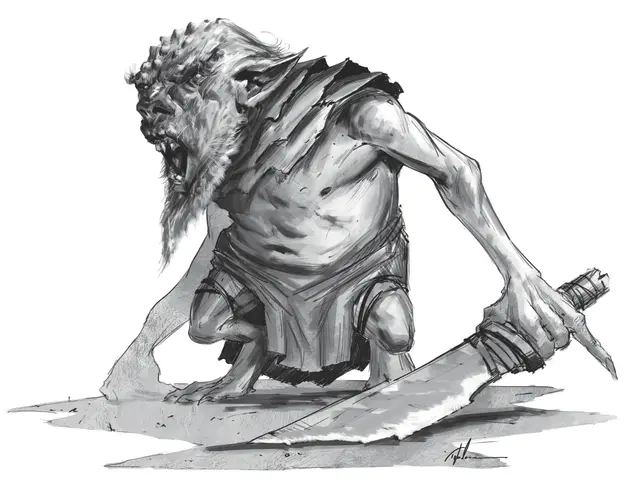

Зудень
Mite
Маленькая Фея, законно-злая

Класс Доспеха 12
Хиты 7 (2к6)
Скорость 30 футов, лазая 30 футов, копая 10 футов
| мод | спас | ||
|---|---|---|---|
| СИЛ | 7 | −2 | −2 |
| ЛОВ | 14 | +2 | +2 |
| ТЕЛ | 11 | +0 | +0 |
| мод | спас | ||
|---|---|---|---|
| ИНТ | 10 | +0 | +0 |
| МДР | 8 | −1 | −1 |
| ХАР | 13 | +1 | +1 |
Навыки Обман +3, Скрытность +6
Чувства тёмное зрение 60 футов, пассивное Восприятие 9
Языки Подземный, Сильван
Опасность 1/4 (50 опыта)
Бонус мастерства +2
Особенности
Вредительское присутствие. Все существа, не являющиеся Феями, которых Зудень видит в пределах 30 футов, получают помеху к на проверки и спасброски Ловкости.
Действия
Кинжал. . Рукопашная или дальнобойная атака оружием: +4 к попаданию, досягаемость 5 фт. или дистанция 20/60 фт., одна цель. Попадание: 4 (1к4 + 2) колющего урона.
Проклятье кипящей крови (перезарядка 6). Зудень на 1 минуту проклинает существо, видимое им в пределах 60 футов. Если Зудень скрыт, использование этой способности не выдаёт его позицию. Пока существо проклято, оно вычитает к6 из всех бросков атаки, проверок характеристик и спасбросков. В любой ход, пока существо страдает от эффекта проклятья, оно может реакцией атаковать союзника, игнорируя эффект проклятья для этой атаки. После этого существо игнорирует эффект проклятья до конца своего хода.
Описание
Зудни — это неприятные феи, наслаждающиеся тем, что причиняют мелкие разрушения и разыгрывают раздражающие шалости, делая даже самых крутых и опытных искателей приключений склонными ко вспышкам разрушительного отчаяния. Когда возникают проблемы с зуднями, даже самая простая задача может обернуться катастрофой, а лёгкое несогласие может быстро перерасти в драку.
Вестники разочарования. Зудни — уроженцы Страны Фей, которые возникают, когда существо становится настолько раздраженным ситуацией или событием, что оно вырывается насилием. В следующий раз, когда это существо спит, оно видит странные сны, затем, не просыпаясь, идёт к ближайшему дереву или другому крупному растению, роет маленькую ямку и кричит туда, наполняя её своим раздражением. Когда оно просыпается на следующее утро, то чувствует себя странно обновлённым. Затем, в следующее новолуние из той ямки выкапывается множество зудней. Рождённые из разочарования и гнева, эти существа существуют только для того, чтобы вызывать в других создавшие их эмоции.
Раздражающие проказники. Зудни предпочитают жить под землей, разыскивая подземелья и пещеры. Они роют сеть скрытых нор, которые окружают существующие лазы и каверны. Они используют эти укрытия, чтобы наблюдать за приходом и уходом монстров и приключенцев, расставляя ловушки, чтобы досаждать и раздражать, когда возможно. Поперёк лестничного пролёта может быть натянута струна, о которую все проходящие будут спотыкаться и скатываться вниз. Замки могут быть забиты мусором, драгоценные камни заменены подделками, а ценные сокровища украдены. Зудни стремятся убивать только если им угрожает прямое насилие. Они получают радость иным способом, наблюдая, как простые обыденные задачи становятся разочаровывающим, болезненным опытом.
Влияние фей. Когда вокруг зудни, все становятся раздражительными и легко ожесточаются. Даже незначительная неудача ощущается грубейшим промахом. Простые задачи становятся сложными. Тех, кто их выполняют, копят гнев и разочарования, которые требуют выхода — обычно через насилие и разрушения. Влияние зудней может превратить даже самую организованный отряд в толпу склочных драчунов. Даже в самой сплочённой группе приключенцев резко падает боевой дух, споры перерастают в драки, а дисциплина становится в лучшем случае непостоянной.
Поля хаотических битв. Те подземелья, в которых зудни живут достаточно долго, превращаются в поля хаотических битв. Тогда даже члены фракций с сильными лидерами иногда оборачиваются друг против друга, из чувства разочарования и антипатии. Когда приключенцы входят в такое подземелье, зудни используют этот дополнительный хаос против них. Они магией втягивают посетителей в свою сеть гнева и разочарования, заманивая исследователей вглубь и ставят их в ситуации и места, которые приносят ещё больше разрушений.